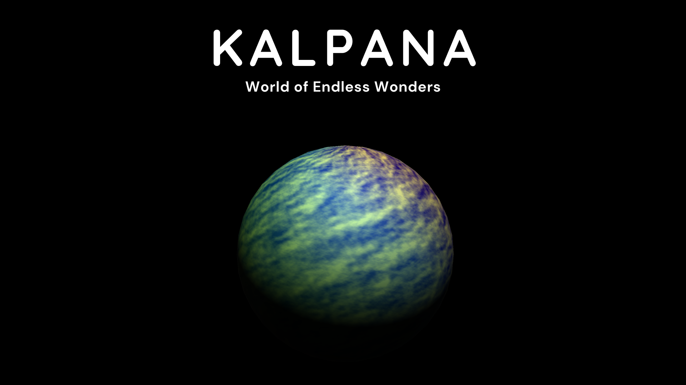
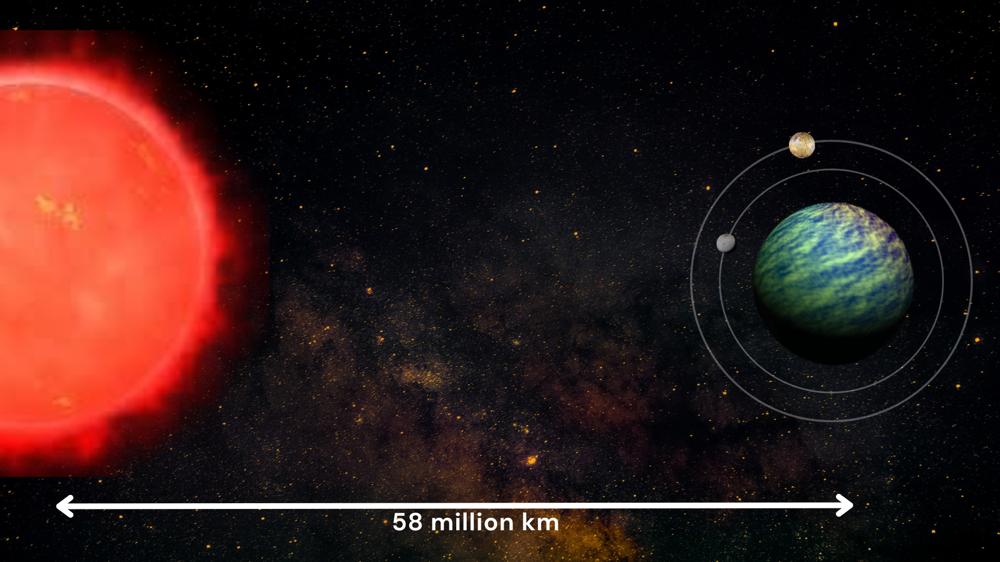

Habitable Exoplanets: Creating Worlds Beyond Our Own
A habitable planet is a planet that can sustain life for a significant period of time. A planet must have liquid water, energy, and nutrients to support life.
In the distant cosmos, Kalpana is the habitable exoplanet that orbits around a red dwarf star Arya. It is a world of endless wonders that offers an intriguing environment for potential human colonization, Kalpana orbits 58 million km from its fuzzy glowing star, relaxing in the crimson warmth of Arya. Its distinctive characteristics include the presence of two moons named Luna and Nova, they significantly shape the daily lives of its inhabitants and contribute to the planet's dynamic environment.
Our Kalpana is around 2.5 times the radius of Earth with a mass of 9 times of Earth with an orbital period of 36 days. Due to the lower luminosity of the red dwarf star, Arya, the plants have adapted themselves to survive and photosynthesis in lower light levels.
Kalpana's moons, Luna and Nova, engage in a perpetual orbit that has a significant influence on life on the planet's surface. The moon's gravitational pull creates huge tides and frequent tsunamis in the equatorial region of the planet where waves rise and fall with a harmonious rhythm. The gigantic tides shape Kalpana's coastal ecosystem and affect the terrestrial regions near the equator. Red algae bloom in response to the changing tides, Due to the presence of two moons, Kalpana experiences a night unlike any other. Luna, the larger moon, illuminates the planet in soft, silvery light, while Nova, the smaller and more distant moon, provides an ethereal, bluish glow. Nighttime on Kalpana is a time of serenity and tranquility. And the Morning appears to be reddish-orange in nature. Luna and Nova cast intricate shadows on the surface, creating a flickering interaction of light and darkness. This unique nocturnal environment leads to the development of bioluminescent organisms that emit a soft, radiant glow, transforming Kalpana's forests into a hypnotic realm.
The habitability of Kalpana is proof of life's tenacity to survive. In this seemingly inhospitable system, life has found a way to thrive. The unique conditions created by the red dwarf star Arya provide a stable climate, with temperatures that hover within the habitable zone, despite the star's dimness. Kalpana's atmosphere is rich in oxygen, thanks to the hardworking oxygen-producing microorganisms found in its oceans. Sustaining life on this planet would be done by harnessing the humongous tidal energy, and converting it into a renewable power source. The flow of life here is linked to the tidal cycle.
Kalpana, a world shaped by its red dwarf star, Arya, and the gravitational pull of its twin moons, Luna and Nova, is proof of the cosmos' resilience, adaptability, and love. It is a place where the tides of the oceans synchronize with the lives of its inhabitants, where night brings an otherworldly glow, and the day is just shiny enough to make everything spontaneous.